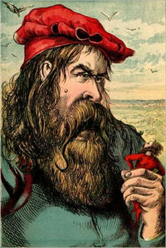

Joseph Martin Kronheim was a German lithographer and wood engraver who illustrated children's picture books including My First Picture Book, Printed in colours by Kronheim (1875). He advanced a printing process using zinc instead of wood blocks, which reduced printing time. Kronheim & Co. printed hundreds of biblical prints and book illustrations, more than 5,000 total by the 1860s. His works are featured in our Favorite Fairy Tales
One of his most notable works is Five Little Pigs. Click the link below to see the short story:
Five Little PigsNotable works of Joseph Martin Kronheim: